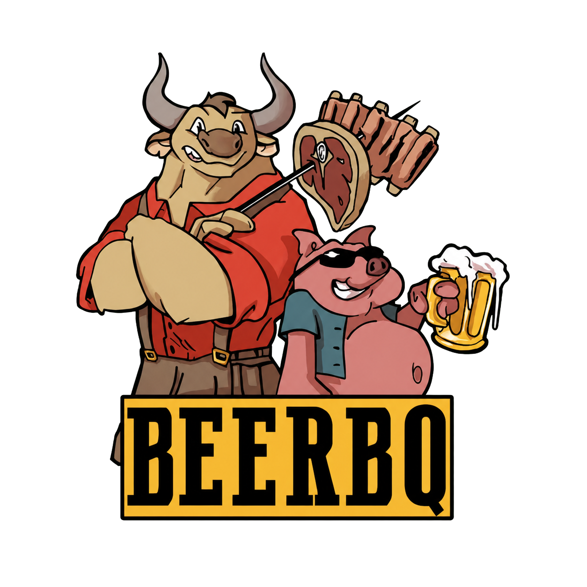
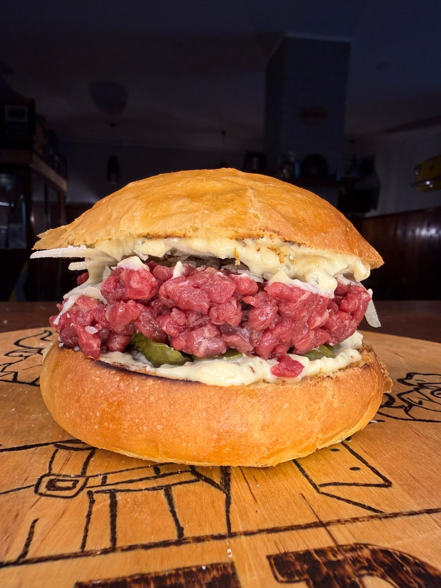
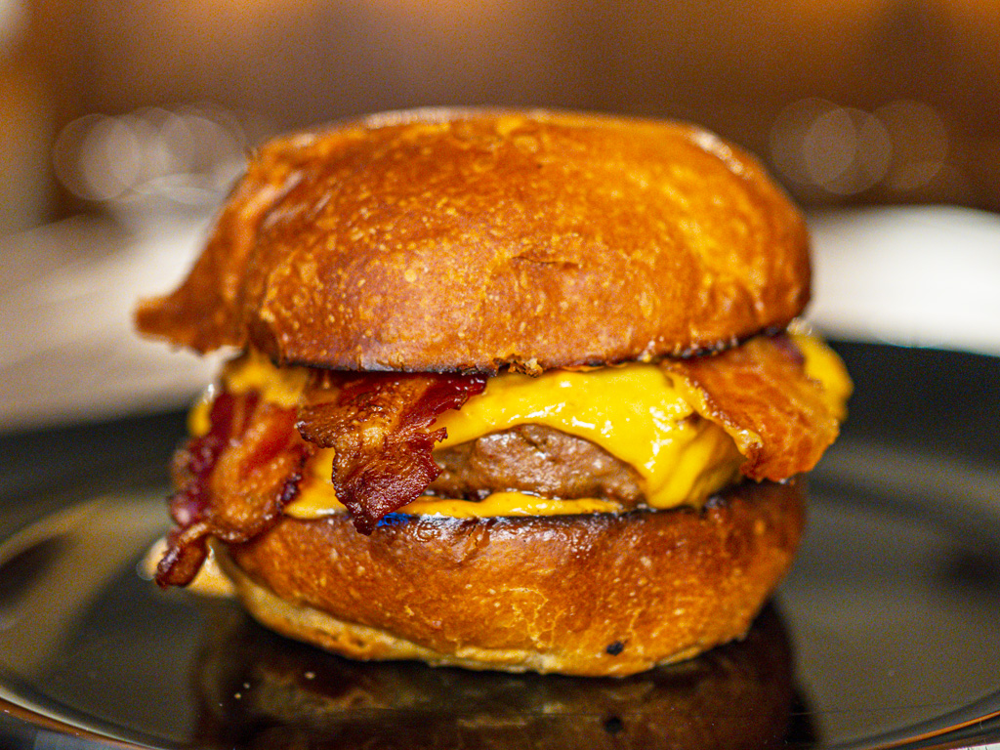

Panino del mese
14€
Crudo Royale
Salsa tartare, tartare di manzo, cetriolini e grana.
Carne · Birra · Compagnia

La nostra tavola è semplice: carne fatta bene, birra fresca
e il tempo giusto per godersi la serata.



Ribs di maiale cotte piano, glassate e servite con contorno di patatine fritte.
Comunicale sempre al personale prima di ordinare.
Chiedi al personale le disponibilità della serata.
Su carne e birra, siamo qui apposta.